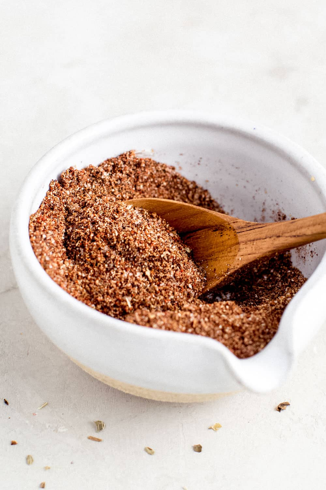

Taco Seasoning

Ingredients
Serving Size:
- 1 tsp. chili powder
- 1/2 tsp. paprika
- 1/2 tsp. garlic powder
- 1/2 tsp. cumin
- 1/4 tsp.cayenne pepper
- 1/4 onion powder
- 1/2 tsp. salt
Directions
- In a bowl, stir together the chili powder, paprika, garlic powder, cumin, cayenne pepper, onion powder, and salt.
- Store in a sealed jar in a cool, dry place.